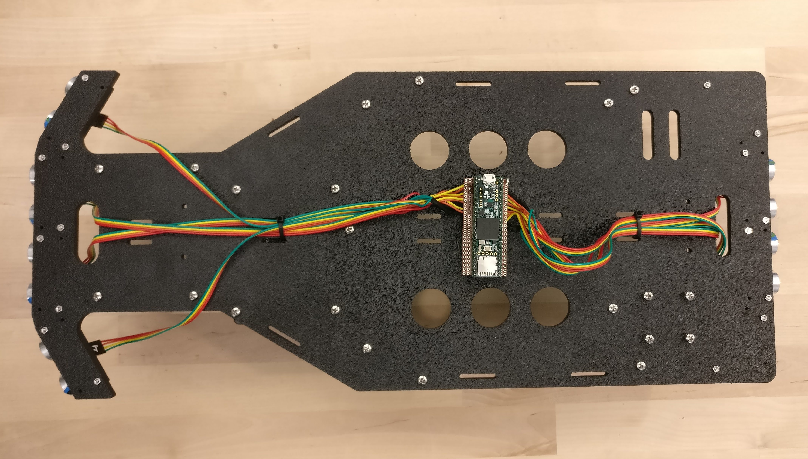
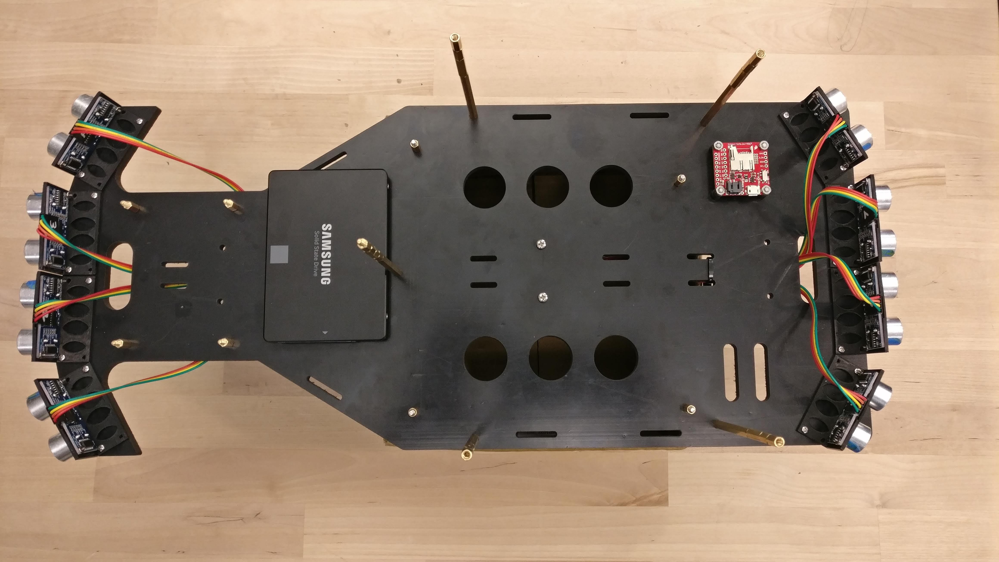
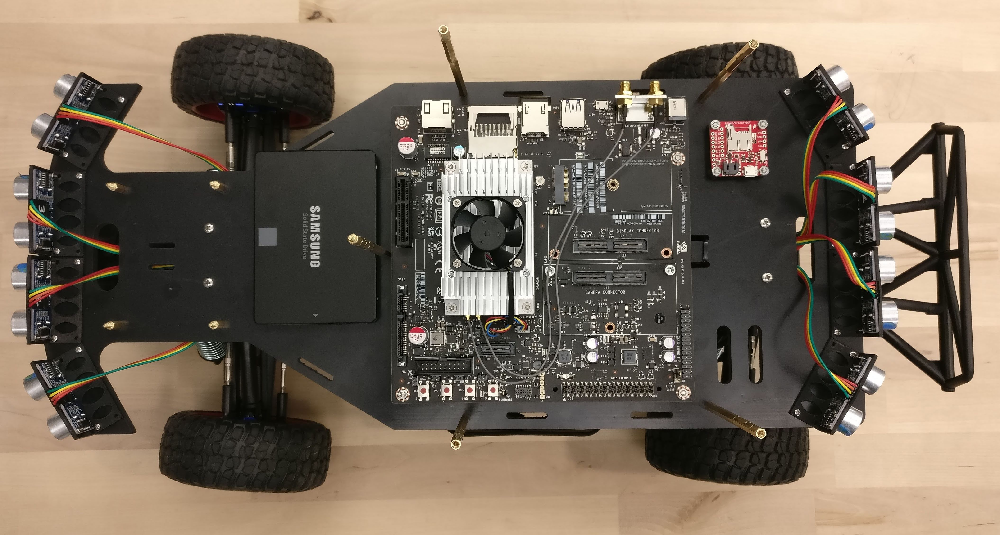

Assembly Guide
Parts List
Below is a list of parts required for this build:
- Chassis and accessories:
- 1x Traxxas Slash 4x4 Platinum (other cars with similar size might work)
- 1x RACECAR/J Spring upgrade set
- 1x Tall battery hold-down and retainer set
- Decks, mounts, and 3D Printed Parts:
- 1x Hammerhead decks set
- 1x Deck 1 / Bottom deck
- 1x Deck 2 / Top deck
- 1x Deck 3 / LIDAR deck
- 1x Teensy PCB / Protoboard
- 2x Encoder disks (black or white) (optional)
- 2x Encoder mounts (optional)
- 8x Ultrasonic mounts
- 1x 1/4" Camera head e.g.: Z-type mount, ball head, ...etc.
- 4x ELP camera mounts (optional):
- seat mount: for front ELP camera
- pole mount: consists of the base and holder. Use for rear ELP camera
- side cameras: either pole or seat mounts (we will assume pole mounts, but either will work)
- 1x Hammerhead decks set
- Sensors:
- 1x Hokuyo UST-10LX laser range finder
- 1x Stereolabs ZED camera
- 4x ELP 1080p camera (optional)
- 2x Sparkfun Digital breakout light encoder (optional)
- 8x HC-SR04 ultrasonic sensor
- 1x Razor 9DoF IMU
- Computers and Microcontrollers
- 1x Teensy 3.5 (3.6 will not work)
- 1x Jetson TX2 with the TX2 development board
- 1x VESC 11.0 electronic speed controller
- Other Electronics
- 1x 7-Port USB hub (powered)
- 1x Samsung 500GB 860 EVO SATA III 2.5" SSD
- 1x Startech 4 port PCI Express USB 3.0 card (independent 5Gbps channels) (optional)
- Power Sources
- 1x Traxxas 8,400mAh 11.1V 3-Cell LiPo battery
- 1x XTPower XT-20000QC2 powerbank
- Bolts, Nuts, Spacers, and Standoffs (material is metal when not noted)
- Bolts
- 1x 0.25"-20x0.5" bolt
- 16x M0x0.25” bolts
- 16x M2x10mm bolts
- 6x M2.5x8mm bolts
- 9x M2.5x10mm bolts
- 4x M3x6mm plastic bolts
- 6x M3x8mm bolts
- 6x M3x10mm bolts
- 20x M3x12mm bolts
- 4x M3x20mm bolts
- Nuts
- 16x M0 nuts
- 16x M2 nuts
- 6x M2.5 nuts
- 20x M3 nuts
- 2x M3 plastic nut
- Spacers
- 2x M3x10mm plastic spacers
- 2x M3x10mm spacers
- Standoffs
- 6x M3x10mm standoffs
- 2x M3x20mm standoffs
- 5x M3x100mm standoffs
- 4x Vibration damper standoffs
- Bolts
- Header Pins and Cables
- 2x 24-pin male headers
- 2x 24-pin female headers
- 8x 4-pin male headers
- 2x 3-pin male headers
- 8x 12" 4-wire female-to-female connectors
- 2x 300mm 3-wire male-to-female servo connectors
- 1x SATA with power extension cable
- 1x PCIe X4 extension cord (optional)
- Barrel plugs:
- 1x 1-Female-3-Male barrel plug splitter (2.5mm ID, 5.5mm OD)
- 1x Female barrel plug to exposed wire (2.5mm ID, 5.5mm OD)
- 1x Male barrel plug to exposed wire (2.5mm ID, 5.5mm OD)
- 2x 12" USB cable: Male A to Male micro B
- Misc
- Liquid white-out or black permanent marker (opposite color to encoder disks)
- Velcro/ 3M Dual Lock (either preferred) or double sided tape
- Heat shrink & heat gun
- Thermal paste (optional)
- Hot glue & hot glue gun (optional)
- Solder and soldering iron
- Digital Multimeter (optional but recommended for continuity testing)
- Tools:
- Traxxas tools (Allen and lug wrenches)
- PH00, PH0, and PH1 screw drivers
- 1x Controller e.g.: Logitech Wireless Gamepad F710, Logitech F310 Gamepad (wired, but preferred), XBOX 360 controller
You can also find the detailed Bill of Materials on our GitHub page.
Assembly Steps
Follow steps below to assemble the car. While matching the holes on the decks to the proper component is relatively easy considering that most parts only fit in one logical configuration, the mapping between deck holes to the proper components are indicated in the figures below. Keep them in mind while assembling the car.

- Red rectangles (holes at corners): Ultrasonic sensor mounting hole
- Green rectangle (holes at corners): SSD mounting holes
- Purple rectangle (holes at corners and along the edge): Jetson mounting holes
- Yellow rectangle (holes at corners): IMU mounting holes
- Red circles: Deck 3 mounting holes
- Yellow circles: Deck 2 mounting holes
- Green circles: Deck 1 mounting holes (onto the chassis)

- Dotted red rectangle: Position of battery pack on top side (mounted with tape/Velcro)
- Dotted purple rectangle: Position of USB hub on bottom side (mounted with tape/Velcro)
- Green rectangle: ZED camera mounting holes (choose one)
- Yellow rectangle (holes at corners): ELP mounts
- Yellow circles: Deck 2 mounting holes (onto deck 1)

- Red circles: Deck 3 mounting holes (onto deck 1)
- Green circles: Hokuyo lidar mounting holes
- Dotted green circles: RPLidar A2/A3 mounting holes (to, optionally, replace the Hokuyo Lidar)
Note: Whenever soldering wires use heat shrink appropriately.
Program the VESC
Follow these steps to program the VESC.
Prepare the Lidar Connector
Add a barrel plug to power the Lidar by following these steps: - Cut the blue and brown cables of the power source and I/O cable and strip them. - On the female-to-exposed wire and male-to-exposed wire connectors distinguish between the wires connected to the inner (negative) and outer (positive) leads of the connector and cut them to about 8" and 12" in length respectively. - Solder the following wires together: - Brown (positive) Lidar wire to the inner (positive) wires of both cables. - Blue (negative) Lidar wire to the outer (negative) wires of both cables. - Apply heat shrink appropriately.
Prepare the Chassis
- Remove the plastic shell by removing the four cotter pins.
- Remove the front and rear shell mounts by unscrewing the two bolts that mount each to a suspension mount.
- Replace the hold-down retainers.
- On the bottom side of the chassis there are four bolts that secure the battery hold-down retainers. Remove the bolts and replace each retainer piece with the equivalent piece from the taller set.
- Insert the Traxxas battery into its slot and secure with the battery hold-down bar.
- Remove the ESC by unfastening the screws that hold it down.
- If your VESC does not come with the same plug-in connectors, cut off the connectors from the Traxxas ESC and solder them onto the VESC (order does not, if the car goes in the opposite intended direction and two connectors can be swapped to fix the fix the issue).
- Remove the receiver box
- Open the receiver box
- Unfasten the two screws that hold the receiver box down to remove it.
- Prepare the VESC
- If the VESC does not have a male Traxxas connector, solder the one from the Traxxas ESC to it.
- Connect the servo motor to the servo cable on the VESC. Add a piece of electric tape to ensure that the cables will not come loose (optional).
- If the VESC servo cable is also a female (smaller) plug (same as steering servo cable), either buy a cable that will handle the conversion or assemble your own male-to-male 3-pin converter. To do the latter, you may cut off two female ends from servo cable and solder them together or solder two 3-pin male headers together.
- Connect the three DC motor cables to the VESC.
- The order does not matter. When testing the car, if the car moves in the opposite direction you can swap any two connections to fix the driving direction.
- Install 2x M3x10mm standoffs on the rear suspension mount's inner holes (where the rear shell mount was located).
- Install 2x M3x20mm standoffs on the front suspension mount's inner holes (where the front shell mount was located).
Once complete, the chassis should look similar to that in the figure below.

Adding Encoders (Optional)
To get estimates of instantaneous velocity, the car supports adding rear wheel encoders to measure the number of wheel rotations. To install the encoders follow these steps.
- Check that the encoder hole and the encoder mount hole align. Sometimes 3D printing results in residue inside the mount making it difficult to mount parts. Carefully remove any residue.
- For each encoder disc, color the recessed portions of the disc with a contrasting color to obtain an alternating pattern.
- Remove the rear wheels using the Traxxas supplied lug ranch.
- Install the encoder disks onto the inside of the wheels.
- Use a hot glue gun on the wheel strokes secure the disks in place.
The wheels with encoders should look like that in the figure below.

- Install an encoder mount on rear hub carriers (blue).
- Place the mount as close to the base of the carrier as possible such that the mount's opening is on the top.
- Use a hot glue gun to secure the mount in place at a vertical position
- Take two servo cables, cut off the male (larger) end to obtain male-to-exposed wire servo connectors.
- Solder the exposed wires to the encoders per the following
- Black/ Brown servo wire to encoder VCC pin
- Red servo wire to encoder OUT pin
- White/ Orange servo wire to encoder GND pin
- Place each encoder into its mount and secure it using a M3x6mm plastic screw and its corresponding plastic M3 nut.
- Run the servo cable to the center of the car.
The mounted encoders should look like that in the figure below.

- Place back the rear wheels and tighten the nut.
Replace the Chassis Springs
Replace the springs with stiffer springs by following these steps. Note that the shorter springs go on the front shocks while the longer ones go on the rear shocks. - Unscrew the bottom bolt holding the shocks in place. - Rotate the shocks up. - Compress the spring on each shock and pull the spring holder down and out. - Remove the old springs and insert the new ones. - Compress the spring on each shock and insert the spring holder back then push it back up into place. - Rotate the shocks back to their original position and fix them by returning the bolt from the first step.
Make sure that the springs sit onto the spring holder.
For more details check out this video.
Prepare the Teensy/ Teensy PCB
- Solder 2x 24-pin male headers onto the Teensy 3.5.
If you manufactured the Teensy PCB follow these steps:
- Solder 2x 24-pin female headers onto the PCB.
- At BL_ENC and BR_ENC solder 2x 3-pin male headers.
- At US1, ..., US8 solder 8x 4-pin male headers.
If you are using a protoboard to make the Teensy circuit, follow the circuit diagram in the figure below to make the above ports and connections.
{kind=link}
You may also choose to cut off one side of the 4-pin connectors and solder the wires directly to Teensy header pins as in this figure.
{kind=link}

Prepare the Decks and Assemble the Car
Preparing the decks will involve working on both sides of the boards. As such we recommend having a box (with one side fully open) at hand to provide support and elevation for the decks will undergoing assembly
Follow these steps:
- Deck 1:
- Mount the ultrasonics onto the ultrasonic mounts and secure the mounts onto the top side of deck 1. It is easier to install the mounts on the deck first then install the ultrasonics into their mounts.
- Use 2x M2x10mm bolts and 2x M2 nuts to secure each mount onto the decks. Use diagonal holes.
- Use 2x M0x1/4" bolts and 2x M0 nuts to mount each ultrasonic sensor. Use diagonal holes.
- If the holes are slightly off or if they are filled due to 3D printing resolution, use a drill with a 0.063" drill bit to drill out new holes.
- Mount the Teensy PCB (or protoboard) onto the bottom of deck 1.
- Use 2x M3x6mm plastic screws to secure 2x M3x10mm plastic spacers onto the bottom of the PCB (this will elevate the PCB).
- Use 2x M3x10mm plastic screws to secure the PCB onto the deck. The screws should go in from the top side and secure the PCB onto the bottom.
- Add the Teensy to the PCB.
- Connect the ultrasonics to the PCB.
- Follow this order when connecting the ultrasonics: start on the front and number the ultrasonics (1 --> 4) clockwise, then move to the back side and number the ultrasonics (5 --> 8) clockwise.
- Connect four pin connectors to each ultrasonic sensor, pass it to the bottom of the deck and connect it onto the PCB to the proper pins (ultrasonic and PCB labels should match). The wire connected to the VCC pin on the ultrasonic sensor should connect to the pin closest to the port name on the PCB (VCC pin on the board).
- Pass the rear wires through the slot near them. Use a zip tie to secure the wires to the bottom of the deck (using the rear-most parallel slits).
- Pass the two middle wires through the slot near them. Pass the side wires down at the sides of the deck. Use a zip tie to secure the wires to the bottom of the deck (using the front-most parallel slits).
- Add the IMU to the top side of deck 1.
- Considering the top side of the IMU to be the side with the USB port, pass the screw end of the vibration damper through the IMU's bottom side and secure them with M3 nuts on the top side.
- Use 4x M3x8mm metal screws, pass them from the bottom of the deck, and secure the IMU onto deck 1 such that the USB port point to the left side of the car.
- Add the SSD to the top side of deck 1.
- Use 4x M3x12mm screws, pass them from the bottom of the deck, and add a nut on the top side but keep it loose. Do not tighten the nut yet.
- Position the SSD on top of the nuts then tighten the screws to secure the SSD onto the deck.
- Note that the nut will provide the necessary elevation for the SSD to account for the zip-tie.
- Install the LIDAR deck (deck 3) mounts.
- Insert 4x M3x10mm bolts from the bottom of deck 1 and secure them with 4x M3x10mm standoffs.
- The standoffs should have the screw portion to the top.
- Install the Jetson mounts.
- Insert 4x M3x20mm bolts through the bottom of deck 1 and secure each with a M3x10mm spacer.
- The protruding portion of the bolt will be used to secure the Jetson.
- Install the deck 2 mounts.
- Using 5x M3x12mm screws through the bottom of deck 1, secure 5x M3x100mm standoffs.
- Mount the ultrasonics onto the ultrasonic mounts and secure the mounts onto the top side of deck 1. It is easier to install the mounts on the deck first then install the ultrasonics into their mounts.
At this point, deck 1 should looks like these top, bottom, and side images.
{kind=link}



- Install the Jetson TX2 board onto deck 1.
- Using the protruding Jetson TX2 mounting bolts, place the Jetson (WiFi to the right side of the car) onto deck 1 and secure it with 4x M3 nuts.
- Attached a SATA with power extension cable from the SSD to the Jetson's SATA port.
- Install the Jetson's WiFi antennas.
- Mount deck 1 onto the chassis.
- Using 4x M3x12mm bolts mount deck 1 onto the chassis through the standoffs installed onto the front and rear chassis mounting decks.
The car should look like that in the figure below
{kind=link}

-
Install the barrel plug splitter onto the bottom of deck 1.
- Zip tie the splitter using the slits under the Jetson. Have the three male connectors on the right side and bias the splitter to the right.
- Pass the female barrel plug through the large bottom slit (with the ultrasonics) and zip tie it on the left side on the deck.
- The three male connectors would connect as follows: one to the Jetson, one to the Lidar female barrel plug, and one would reach the second deck and connect to the battery.
- Zip tie the splitter using the slits under the Jetson. Have the three male connectors on the right side and bias the splitter to the right.
-
Deck 3:
- Add a bit (pea sized blob) of thermal paste onto the bottom of the Hokuyo Lidar (optional).
- Secure the Lidar onto the deck using 2x M3x8mm bolts (M3x6mm bolts work as well).
- Mount deck 3 onto deck 1 through the deck 3 standoffs. Secure the deck using 4x M3 nuts.
- Connect ethernet cable to the Jetson.
- Pass the power cable to the rear end of the car. Use zip-ties and slits to secure the cable appropriately.
Once deck 3 is connected, the car should look like that in this figure.

-
Deck 2:
- Mount the ELP cameras' pole mounts (optional).
- Unplug the USB cable for ease of installation.
- Mount the pole mount base onto the top side of deck 2. Use 2x M2.5x10mm screws and corresponding nuts to secure each base. gohere
- Place the ELP cameras onto the pole mount holder. Use 2x M2.5x8mm screws to secure each cameras. Place the cameras with upside-down and have the closed portion of the ELP mounting decks point down (so that it carries the ELP camera).
- Mount the holder onto the base mounts using a M2.5x10mm bolt and the corresponding nut.
- Mount the ZED camera.
- Use a 1/4" bolt to fasten a camera head (any generic 1/4" camera mounting head/ tripod head works) onto the top of deck 2. Use any of the 1/4" holes (larger holes).
- Using two equally sized pieces of Velcro tape, secure the USB hub onto the bottom side of deck 2. Place it close to the rear end of the deck.
- Using two equally sized pieces of Velcro tape, secure the battery onto the top rear end of deck 2.
- Using two equally sized pieces of Velcro tape, secure the front (and perhaps side) cameras at the desired position on Deck 2 (optional).
- Add the PCIe card (optional):
- Pass 2x 12mm M3 screws through the PCIe card holes from the top side of deck 2.
- Secure the screws using 2x M3 nuts on the bottom of the deck.
- Remove the PCIe card's mounting bracket (the only two screws on the card).
- Cut two small pieces of Velcro (2cm x 0.5cm), lock them together, and tape one on the back of the PCIe card at the end furthest from the USB ports.
- Remove the protective film on the other piece of Velcro, pass the PCIe card through the 12mm screws, and secure the card onto the deck (all electronics should be visible on the bottom of the deck and the card's port should be pointing to the rear side of the deck).
- Connect the PCIe extension cable to the card.
- Secure the PCIe card using 2x M3 nuts.
- Mount the ELP cameras' pole mounts (optional).
-
Mount deck 2 onto deck 1.
- Using 5x M3x12mm metal screws secure deck 2 onto its mounting standoffs on deck 1.
-
Connect the PCIe extension cable to the PCIe X4 port on the Jetson board.
-
Connect the USB cables as follows:
- Connect the VESC, IMU, Teensy, and rear ELP camera USB cables to the USB hub. Order does not matter.
- Connect the ZED camera and front, right, and left ELP camera USB cables to the PCIe card's USB ports in the following order:
- ZED camera: port 1 (closest to the front of the car)
- Front ELP camera: port 2
- Right ELP camera: port 3
- Left ELP camera: port 4 (furthest back)
- Connect the USB hub's USB cable to the Jetson board's USB 3 port.
-
Use zip-ties and slits to manage the cables, connectors, and wires
This concludes the car assembly. It should look like the car in the top and side view images.
{kind=link}

Final image of car
Potential changes:
While this is a list of sensors we used on Super COMO, additional sensors can be added by placing them on any of the decks. Additionally, the following can be done: - Removing the Lidar and reusing Deck 3 (e.g.: a new deck can be designed to fit in deck 3's place to house any other sensors) - Adding a video camera or DSLR. When the ZED camera is not in use, it may be removed in favor of a video camera or DSLR dedicated to recording video or taking pictures as long as that camera has a 1/4" mounting hole. - Replacing the ZED camera with any other camera with 1/4" mounting hole. - Adding more decks: with some modifications, a fourth deck may be added on top of deck 2 by replacing four or five of the screws that secure deck 2 onto deck 1 by standoffs. The new deck may house more sensors. Note that weight will become a more critical issue.
Please reference the Super COMO Github to find the CAD files